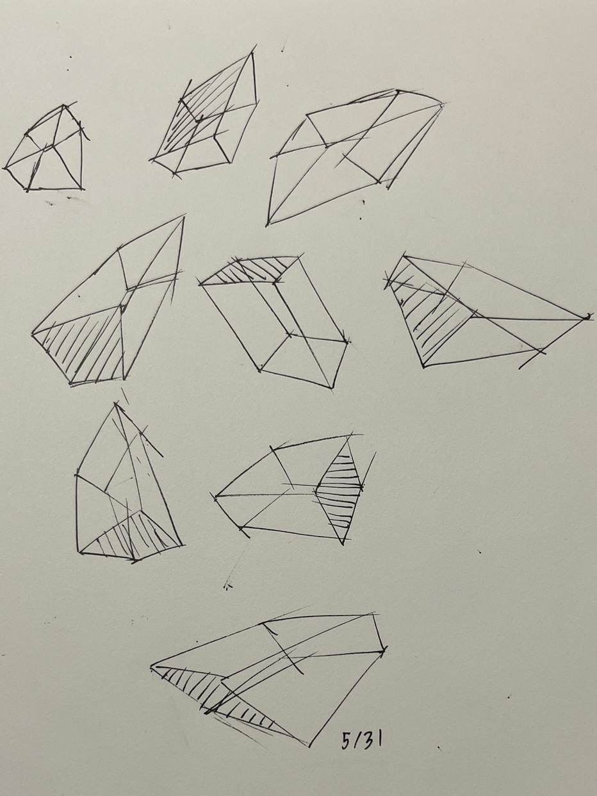
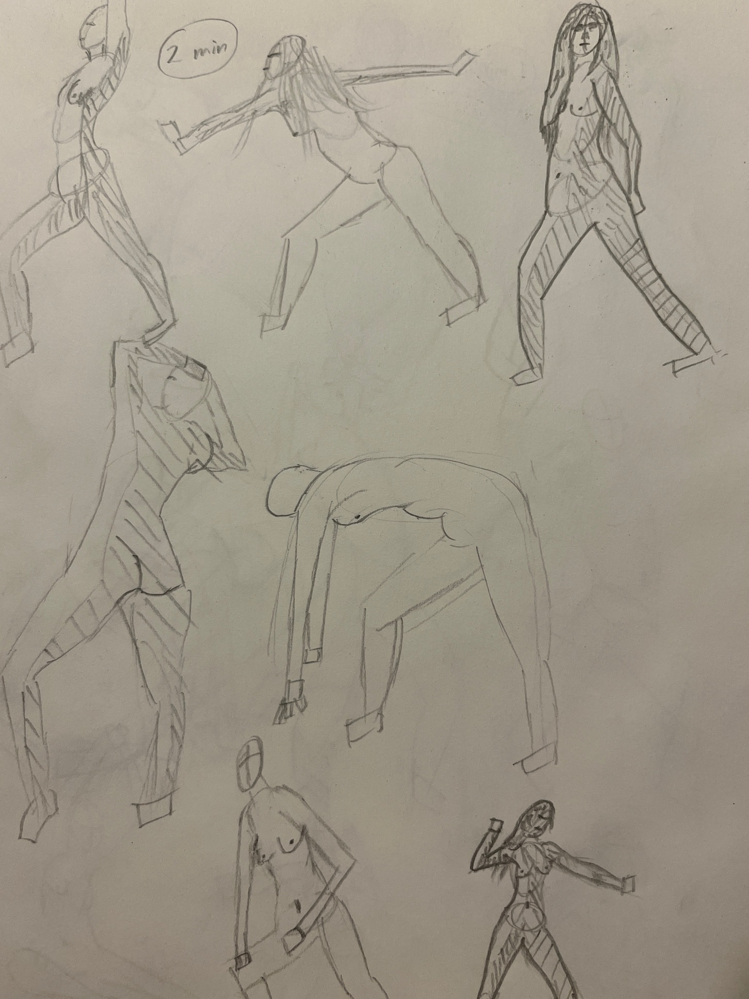
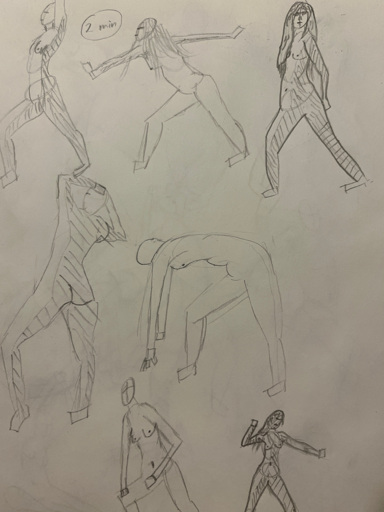

Figure Drawing 1, Week 1
Week of May 30
11h 42m of drawing
Overall a pretty good start to art
home school, but I'd like to draw for >20 hours next week
Monday
2h 30m drawing
2h planning art home school
No better way to spend a day off work than drawing ellipses. Feeling
hopeful about the progress I'll make over the next few months.
I love the idea of slowly accumulating dozens of weekly progress
updates, so it's clear for myself and others to see how going from
complete beginner to decent is just the result of consistent
practice.
Tuesday
Today was demoralizing. Last month I had drawn lots of gesture and
boxes in a small sketchbook, which I only now realized led me to rely on
drawing with my wrist instead of shoulder.
Trying to draw tonight with my shoulder in a larger sketchbook felt
so unnatural and I was pretty unhappy with the results.


Wednesday
Started the day by watching the videos in week 1 and 2 of Figuary.
Some review of figure drawing fundamentals (squash/stretch in
torso/pelvis, capturing gesture in a few lines etc), and some new
details on shading figures
Today was my first attempt at doing timed figure drawing (2 and 5
minutes). The time pressure helped me stress less about mistakes and
just enjoy the process.
Main thing I'd like to improve on with these drawing is exaggerating
the gesture to more clearly tell a story with a single figure. Feeling a
lot better at drawing in a larger sketchbook with my shoulder
already.
Thursday
Watched the videos in week 3 of Figuary
Feeling more comfortable with shading figures to imply volume.
Friday
No drawing today... was very productive at work, which made me too
exhausted to do anything once I got home
Saturday
Finished watching all the videos in Figuary
First time doing timed figure drawing with my gf over facetime. Was a
lot of fun, she did a lot of drawing while growing up, but hasn't done
much art over the past few years.
When we compared our drawings of the same models, I felt a pang of
jealousy because hers were a lot better than mine, but a moment later I
realized that I'm...
- enjoying the process
- confidant that I'll improve quickly
- sure there'll always be artists who are better than me
- really happy that I get to study the same thing with my partner
Made the red pen sketches while I was on the bus, was fun to draw
from life and notice the person sitting beside me watching me draw
Sunday
Did a pair of 15 minute sketches (last pic) to end the week on a good
note
 
